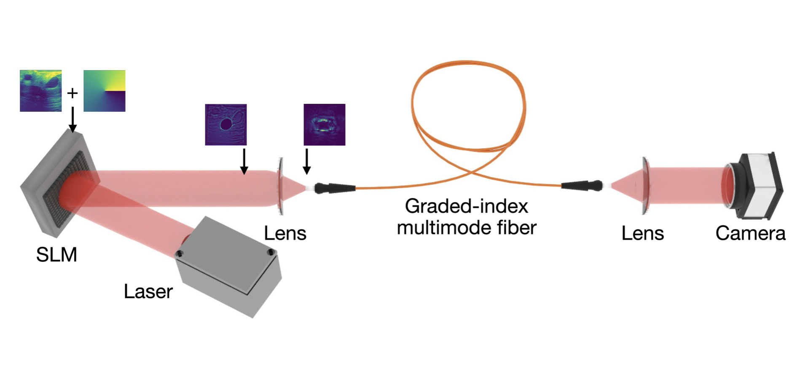
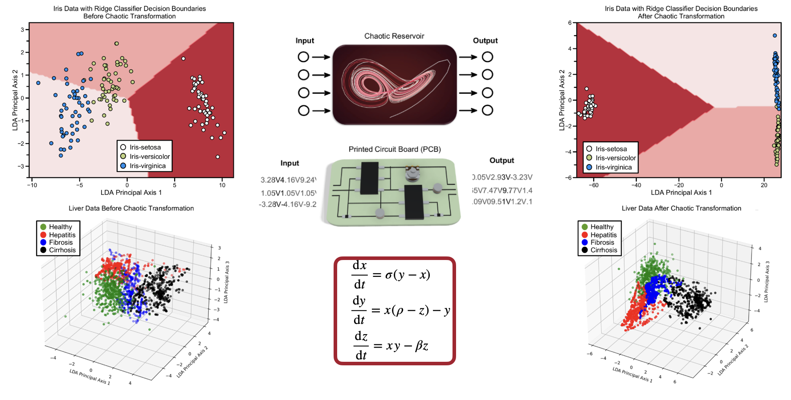
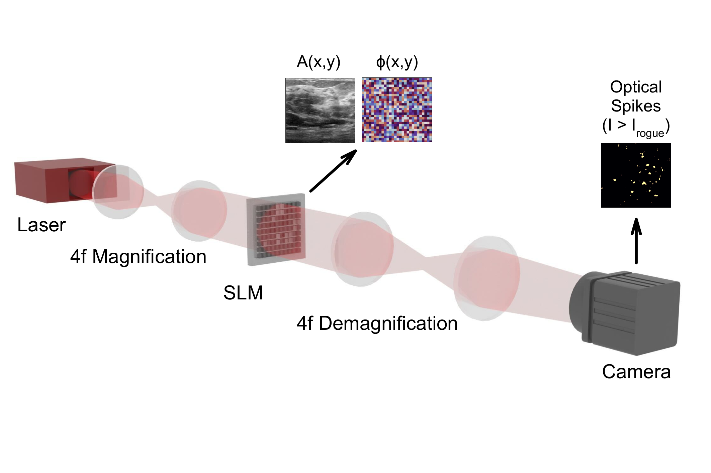
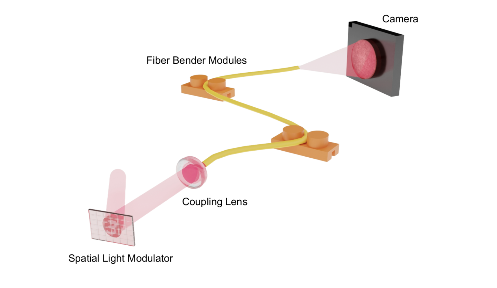
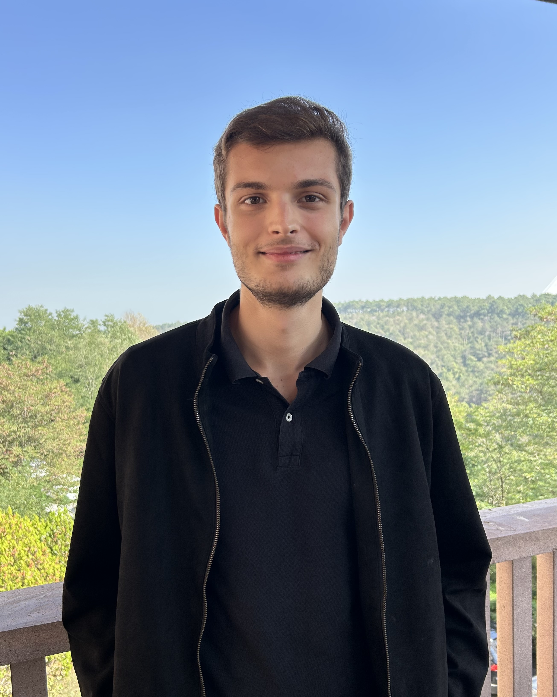

Add imageassets/research/spatiotemporal-chaos.pngNanophotonics 2025
Spatiotemporal chaos as a computational resource
Multimode fibers pushed to the edge of spatiotemporal chaos act as high-dimensional reservoirs for machine learning.
Nonlinear & ultrafast photonics · Optical computing
I work across experimental and computational photonics: building optical computers from the nonlinear, spatiotemporal dynamics of light in fibers, designing ultrafast fiber lasers, and developing single-shot ultrafast imaging. The thread is turning complex optical physics — chaos, mode coupling, extreme events — into computation and measurement.
Undergraduate Researcher, Laboratory of Photonic Technologies (PI: Dr. Uğur Teğin) · Koç University
/ research
My work treats optical hardware as the computer itself: instead of simulating a neural network on a digital chip, I map the computation onto the nonlinear, spatiotemporal dynamics of light in multimode fibers and laser cavities — reservoir, diffractive, recurrent, and spiking networks realized directly in the optical domain.
Alongside the computing I build the tools that make it possible — ultrafast fiber laser sources and single-shot ultrafast imaging at up to 685 billion frames per second — and I treat complex physics like chaos, mode coupling, and rogue-wave statistics as a resource rather than a nuisance.
Areas

Add imageassets/research/spatiotemporal-chaos.pngNanophotonics 2025
Multimode fibers pushed to the edge of spatiotemporal chaos act as high-dimensional reservoirs for machine learning.

Add imageassets/research/chaotic-attractors.pngCommunications Engineering 2024
An electronic substrate that computes through its own chaotic strange-attractor dynamics — the basis of a pending patent.

Add imageassets/research/optical-snn.pngnpj Unconventional Computing 2025
Extreme, heavy-tailed rogue-wave statistics in nonlinear fiber are harnessed as an optical spiking mechanism.

Add imageassets/research/diffractive-mmf.pngOptics Letters 2025
Mechanical mode-coupling control turns a multimode fiber into a trainable diffractive optical network.
/ publications
Photonic neural networks at the edge of spatiotemporal chaos in multimode fibers
Nanophotonics 2025 · 14(16), 2723–2732 DOI
Implementing the analogous neural network using chaotic strange attractors
Communications Engineering 2024 · 3, 99 DOI
Fiber-based diffractive deep neural network
Optics Letters 2025 DOI
Optical spiking neural networks via rogue-wave statistics
npj Unconventional Computing 2026 DOI
Recurrent neural networks implemented through spatiotemporal light propagation in optical fibers
Optica 2026 · under review arXiv
Multimode fiber laser cavities as nonlinear optical processors
Communications Physics 2026 · under review arXiv
Low-cost passive single-shot ultrafast imaging at 685 Gfps
Optics Letters 2026 · under review arXiv
Real-time surrogate modeling of nonlinear pulse evolution in multimode fibers
Optics Letters 2025 · under review arXiv
* Equal contribution. Full list on Google Scholar.
/ patent
Method and system for enhanced machine learning utilizing chaotic attractors. Kesgin, B. U. & Teğin, U. · International Patent (PCT) WO2025063908A1
/ selected talks
Selected from 11 presentations at SPIE Photonics West, CLEO, CLEO Europe, and FiO. See CV for the full list.
/ teaching
Teaching assistant for optics and electromagnetics at Koç University.
/ news
/ about

Add photoassets/headshot.jpgI’m a third-year Electrical & Electronics Engineering student and researcher at Koç University’s Laboratory of Photonic Technologies. My work spans optical computing and photonic neural networks, nonlinear and ultrafast dynamics in multimode fibers, ultrafast fiber laser sources, and single-shot ultrafast imaging — with first-author work in Nanophotonics, Communications Engineering, and Optics Letters, an internationally pending patent on chaos-based computing, and a TÜBİTAK STAR research fellowship. I’m applying for PhD positions for 2027.